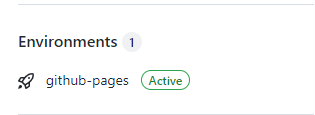
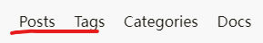

write ahead
my blog code would help you create your own blog https://github.com/mobilephone724/hugoBlog/
create a blog on local
Quick Start | Hugo (gohugo.io)
install hugo
Install Hugo | Hugo (gohugo.io)
It seems installation on windows is a little harder. The following actions are based on linux
create a new site
1
|
hugo new site quickstart
|
The above will create a new Hugo site in a folder named quickstart. Enter the folder quickstart which is seemed as the root directory
choose a theme
I have tried many themes, and in the end, LoveIt is what I love best. So I use it to create my blogs.
Create an empty git repository(quickstart) and make this repository(LoveIt) a submodule of your site directory:
1
2
|
git init
git submodule add https://github.com/dillonzq/LoveIt.git themes/LoveIt
|
and configure config.toml as what you want. If you can’t understand it completely right now, just copy it.
copy everything from themes/LoveIt/exampleSite
1
|
cp -r themes/LoveIt/exampleSite/* .
|
then
- configure
config.toml as what you want. If you can’t understand it completely right now, just copy it.
1
2
3
4
5
6
7
8
9
10
11
12
13
14
15
16
17
18
19
20
21
22
23
24
25
26
27
28
29
30
31
32
33
34
35
36
37
38
39
40
41
42
43
44
45
46
47
48
49
50
51
52
53
54
55
56
57
58
59
60
61
62
63
64
65
66
67
68
69
70
71
72
73
74
75
76
77
78
79
80
81
82
83
84
85
86
87
88
89
90
91
92
93
94
95
96
97
98
99
100
101
102
103
104
105
106
107
108
109
110
111
112
113
114
115
116
117
118
119
120
121
122
123
124
125
126
127
128
129
130
131
132
133
134
135
136
137
138
139
140
141
142
143
144
145
146
147
148
149
150
151
152
153
154
155
156
157
158
159
160
161
162
163
164
165
166
167
168
169
170
171
172
173
174
175
176
177
178
179
180
181
182
183
184
185
186
187
188
189
190
191
192
193
194
195
196
197
198
199
200
201
202
203
204
205
206
207
|
baseURL = "http://example.org/"
languageCode = "en-us"
title = "My New Hugo Site"
theme = "LoveIt"
enableRobotsTXT = true
enableEmoji = true
[languages]
[languages.en]
weight = 1
languageCode = "en"
languageName = "English"
paginate = 12
[languages.en.menu]
[[languages.en.menu.main]]
identifier = "posts"
name = "Posts"
url = "/posts/"
title = ""
weight = 1
[[languages.en.menu.main]]
identifier = "tags"
pre = ""
post = ""
name = "Tags"
url = "/tags/"
title = ""
weight = 2
[[languages.en.menu.main]]
identifier = "categories"
pre = ""
post = ""
name = "Categories"
url = "/categories/"
title = ""
weight = 3
[[languages.en.menu.main]]
identifier = "documentation"
pre = ""
post = ""
name = "Docs"
url = "/categories/documentation/"
title = ""
weight = 4
[[languages.en.menu.main]]
identifier = "github"
pre = "<i class='fab fa-github fa-fw'></i>"
post = ""
name = ""
url = "https://github.com/dillonzq/LoveIt"
title = "GitHub"
weight = 5
[languages.en.params]
description = "About LoveIt Theme"
keywords = ["Theme", "Hugo"]
[languages.en.params.app]
title = "LoveIt"
noFavicon = false
svgFavicon = ""
themeColor = "#ffffff"
iconColor = "#5bbad5"
tileColor = "#da532c"
[languages.en.params.search]
enable = true
type = "algolia"
contentLength = 4000
placeholder = ""
maxResultLength = 10
snippetLength = 30
highlightTag = "em"
absoluteURL = false
[languages.en.params.search.algolia]
index = "index.en"
appID = "PASDMWALPK"
searchKey = "b42948e51daaa93df92381c8e2ac0f93"
[languages.en.params.home]
rss = 10
[languages.en.params.home.profile]
enable = true
gravatarEmail = ""
avatarURL = "/images/avatar.png"
title = "hugoAuthor"
subtitle = "something to share"
typeit = true
social = true
disclaimer = ""
[languages.en.params.home.posts]
enable = true
paginate = 6
[languages.en.params.social]
GitHub = "hugoAuthor"
[params]
version = "0.2.X"
defaultTheme = "light"
dateFormat = "2006-01-02"
images = ["/logo.png"]
[params.header]
desktopMode = "fixed"
mobileMode = "auto"
[params.header.title]
name = "hugoAuthor"
pre = "<i class='far fa-kiss-wink-heart fa-fw'></i>"
typeit = false
[params.footer]
enable = true
custom = ''
hugo = false
copyright = true
author = true
since = 2022
license= '<a rel="license external nofollow noopener noreffer" href="https://creativecommons.org/licenses/by-nc/4.0/" target="_blank">CC BY-NC 4.0</a>'
[params.section]
paginate = 20
dateFormat = "01-02"
rss = 10
[params.list]
paginate = 20
dateFormat = "01-02"
rss = 10
[params.page]
hiddenFromHomePage = false
hiddenFromSearch = false
twemoji = false
lightgallery = false
ruby = true
fraction = true
fontawesome = true
linkToMarkdown = true
rssFullText = false
[params.page.toc]
enable = true
keepStatic = false
auto = true
[params.page.code]
copy = true
maxShownLines = 10
[params.page.math]
enable = true
blockLeftDelimiter = ""
blockRightDelimiter = ""
inlineLeftDelimiter = ""
inlineRightDelimiter = ""
copyTex = true
mhchem = true
[params.page.mapbox]
accessToken = "pk.eyJ1IjoiZGlsbG9uenEiLCJhIjoiY2s2czd2M2x3MDA0NjNmcGxmcjVrZmc2cyJ9.aSjv2BNuZUfARvxRYjSVZQ"
lightStyle = "mapbox://styles/mapbox/light-v10?optimize=true"
darkStyle = "mapbox://styles/mapbox/dark-v10?optimize=true"
navigation = true
geolocate = true
scale = true
fullscreen = true
[params.page.share]
enable = true
[params.page.comment]
enable = true
[params.page.comment.utterances]
enable = false
repo = ""
issueTerm = "pathname"
label = ""
lightTheme = "github-light"
darkTheme = "github-dark"
[params.seo]
image = "/images/Apple-Devices-Preview.png"
thumbnailUrl = "/images/screenshot.png"
[markup]
[markup.highlight]
codeFences = true
guessSyntax = true
lineNos = true
lineNumbersInTable = true
noClasses = false
[markup.goldmark]
[markup.goldmark.extensions]
definitionList = true
footnote = true
linkify = true
strikethrough = true
table = true
taskList = true
typographer = true
[markup.goldmark.renderer]
unsafe = true
[markup.tableOfContents]
startLevel = 2
endLevel = 6
[mediaTypes]
[mediaTypes."text/plain"]
suffixes = ["md"]
[outputFormats.MarkDown]
mediaType = "text/plain"
isPlainText = true
isHTML = false
[outputs]
home = ["HTML", "RSS", "JSON"]
page = ["HTML", "MarkDown"]
section = ["HTML", "RSS"]
taxonomy = ["HTML", "RSS"]
taxonomyTerm = ["HTML"]
|
- remove
content/about because it may lead to that github can’t show your page
- remove anything in
content/posts, and next section will help you write your own post
create your first post
I don’t like the way on Quick Start | Hugo (gohugo.io) to create a post, for inserting pictures can be undesirable. The best way for me now it as follows
1
2
3
4
5
|
cd content/posts
mkdir my_first_post
cd my_first_post
mkdir pic # create a directory to store pictures.
touch index.md
|
The advantage is that the path of pictures is like pic/picture.png. It is very similar to the way to write in typora
notice that you can use multi-level directories like
1
2
3
4
5
6
7
8
9
10
|
ubuntu@VM-4-13-ubuntu:~/quickstart/content/posts$ tree .
.
├── APUE
│ └── chapter3
│ ├── index.md
│ └── pic
│ ├── file.png
│ ├── Screenshot-2021-05-04-19-58-12.png
│ ├── Screenshot-2021-05-04-20-40-06.png
│ └── Screenshot-2021-05-05-09-34-21.png
|
then write something to index.md
1
2
3
4
5
6
7
8
9
10
11
12
13
14
15
16
17
18
|
---
weight: 3
title: "my first post"
author: "hugoAuthor"
tags: ["hugo","LoveIt"]
categories: ["blog"]
toc:
enable: true
auto: true
date: 2022-01-14T23:43:08+08:00
publishDate: 2022-01-14T23:43:08+08:00
---
# add a chapter
some content

|
and save this picture to content/posts/my_first_post

and now see your blog on website
1
|
hugo server #in directory quickstart
|
open website at http://localhost:1313/ to see your blog
show your blog on github page
The following action will help pushing your blog on github
create a github account
It may be quite easy for you do so. Suppose your github user name is hugoAuthor
create a repo
The repo’s name must be like hugoAuthor.github.io and visibility must be public
push your blog to github page
in quickstart directory
This command will create a directory named public in which is what all we need to show our blog.
What we’ll do following is push content in public to the repo you just created.
1
2
3
4
5
6
|
cd public
git init
git add .
git commit -m "first commit"
git remote add origin https://github.com/hugoAuthor/hugoAuthor.github.io.git
git push origin master
|
Open the website of your repo then wait until you see active on Environments

Now you can see your blog on hugoAuthor.github.io
more details
post head
The head I use is like
1
2
3
4
5
6
7
8
9
10
11
12
|
---
weight: 3
title: "your first post"
author: "hugoAuthor"
tags: ["hugo","LoveIt"]
categories: ["blog"]
toc:
enable: true
auto: true
date: 2022-01-14T23:43:08+08:00
publishDate: 2022-01-14T23:43:08+08:00
---
|
weight: 3 means the weight of this post. The smaller the weight is, the position of this post is higher in homepage. For example, if you need a post to always be at top of homepage, you can use weight: 1 in that post.
tags: ["hugo","LoveIt"] , categories: ["blog"] add tags and categories of this post, you can see all tags and categories at the top-right corner

toc: add table of contents
To write date conveniently, use the script
1
|
date +'%Y-%m-%dT%H:%M:%S+08:00'
|
- create an empty public repo in github, named as hugoTalk
- open utterances app ,click install
- config utterances at https://github.com/apps/utterances
- modify
config.toml at [params.page.comment.utterances], enable it and copy your hugoTalk url to repo
- publish your blog and you will see the comment area.
this blog may help you do so